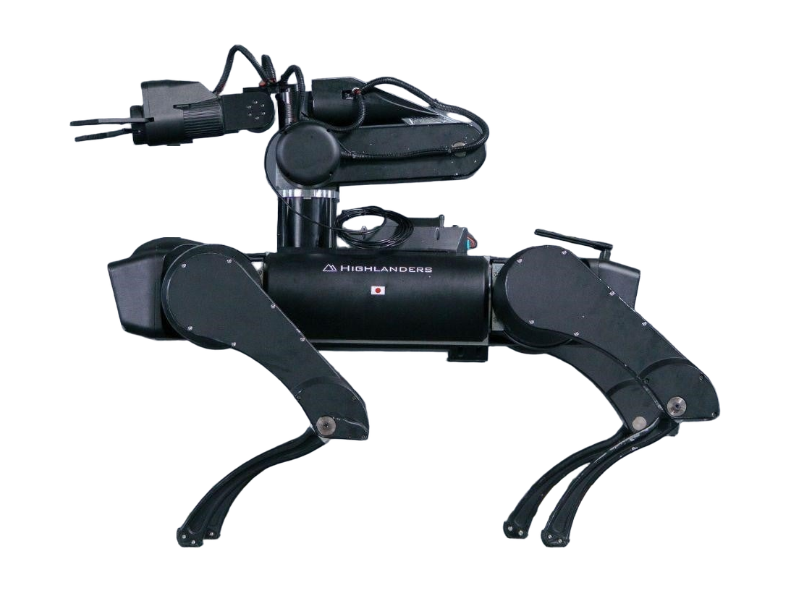

HLQ EDGE
A quadruped robot from Japan, announced 2026.
Sources retrieved: 2 November 2026 (A)
- Applications
- Intended use, per the manufacturer
- Aimed at industrial sites: heavy-load transport, patrol inspection and remote work (translated from the Japanese).Source and note: Intended use, per the manufacturerA prtimes.jp/main/html/rd/p/000000008.000156831.html · Retrieved 2 November 2026
- Indicative price
- Not stated

Manufacturer's own photo.
Specifications
8/33 specifications disclosed 25 not stated
25 fields hidden
How to read the figuresShow guideClose
- not statedNo source
- noStated by a source
- 0Reported as zero
- ASource
- A*Source with a caveat (select it)
- CERecords only what the manufacturer states regarding CE marking.
Select a source marker for source details and notes.
Physical3/14 disclosed
Power1/5 disclosed
Sensing and autonomy2/6 disclosed
Payload and expansion2/3 disclosed
Commercial0/1 disclosed
Compliance & certifications0/4 disclosed
Against the field
Each strip holds every robot of this type in the guide that states the figure, one bar per group of values. Further right means a larger figure, not a better robot. A taller bar means more robots in that group.
Height
25–50cm9.84–19.7inOur conversion from 250–500 mm. The manufacturer does not state an imperial figure itself, so the conversion has no source of its own.
93 quadrupeds state a height
HLQ EDGE states a range, not one figure, so it is shown as a band and not ranked against the others. 1 states only a bound (≥ or ≤) and is not ranked.
Degrees of freedom
12DoF
83 quadrupeds state degrees of freedom
15 state a higher figure, 4 a lower one. 62 more state exactly the same figure. 1 states only a bound (≥ or ≤) and is not ranked.
Runtime
180minNote: load condition not stated
116 quadrupeds state a runtime
25 state a higher figure, 40 a lower one. 4 more state exactly the same figure. 19 state a range that includes this figure. 27 state only a bound (≥ or ≤) and are not ranked.
Notes
Highlanders unveiled the HLQ EDGE quadruped on 7 September 2026 (translated from the Japanese).
Highlanders calls it an industrial-grade machine with up to 60 kg payload, up to 330 Nm joint torque and 3 hours of continuous operation (translated from the Japanese).
The release lists wireless connectivity as Wi-Fi 6 (IEEE 802.11ax) and 5G (translated from the Japanese).
The machine has a rear mount rail, and a robot arm developed by Highlanders can be fitted as an option (translated from the Japanese).
Walking is controlled by an in-house AI that uses a world model (translated from the Japanese).
Highlanders' video shows the robot climbing stairs, stepping over a step higher than its torso height in normal walking and jumping a gap between platforms (translated from the Japanese).
TECH+ reports that HLQ EDGE is the successor of the HLQ Air quadruped (translated from the Japanese).
Sources
One line per source, not per figure: a source has one retrieval date.
- Aprtimes.jp/main/html/rd/p/000000008.000156831.htmlSecondary. Retrieved 2 November 2026